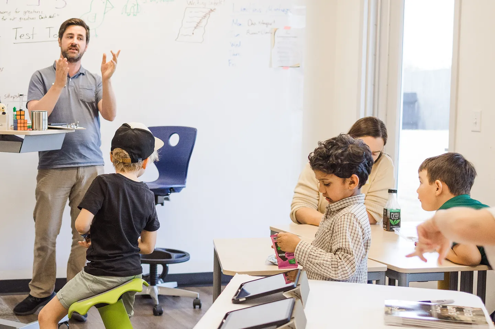
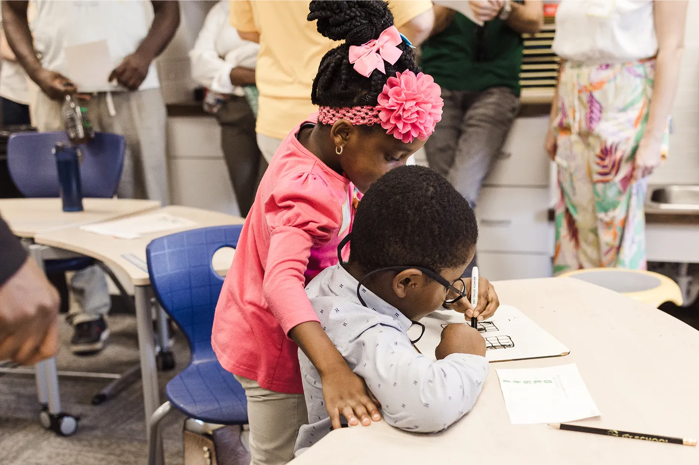

GT School is a selective school for gifted and talented children, in person at our Georgetown, Texas campus or online from anywhere.
The gifted school in the Alpha School network.
Two programs of one school
-

In person Georgetown Campus Two hours of mastery academics each morning on our Georgetown, Texas campus, afternoons for workshops and building. Explore the Georgetown campus -
 Online
GT Anywhere
Live mastery academics with Guides from wherever you live, and four in-person weekends a year in Georgetown.
Explore GT Anywhere
Online
GT Anywhere
Live mastery academics with Guides from wherever you live, and four in-person weekends a year in Georgetown.
Explore GT Anywhere
Compare the two schools
| Category | Georgetown Campus | GT Anywhere |
|---|---|---|
| Same school, same academics | One school, one admissions bar, one mastery-based program. Students advance when they show mastery, not when the calendar says so. | Same |
| Admissions | Students at or above the 90th percentile. Begin online, then an assessment and a family conversation. | Same |
| After 8th grade | Families plan the path after 8th grade with admissions. | Same |
| The day | Mornings from 9 to noon: about two hours of focused academics in TimeBack blocks, with structured breaks. Afternoons: workshops, projects and competitions. | Two to three hours of focused mastery academics a day, with live sessions from Guides. The rest of the day is yours. |
| Where and how | On campus in Georgetown, Texas, north of Austin. | From home, anywhere in the United States. |
| Peers and community | A small cohort of gifted peers, together every school day. | A cohort of gifted peers online every day, together in person each quarter. |
| In-person time | Every school day. | Four intensive weekends a year in Georgetown. |
| Guides | Guides on campus in every session. | Live Guides online, with a one-to-one check-in every week. |
| Tuition and access | Tuition on request. Ask admissions. | $10,400 a year. Eligible Texas families can apply the TEFA voucher toward the full amount. |
Sources: admission bar, tuition and TEFA, anywhere.gt.school/academics; Georgetown schedule, gt.school/academics; GT Anywhere schedule, anywhere.gt.school/academics; intensive weekends, anywhere.gt.school/intensives; weekly check-ins, the Terms of Use on both sites. Checked 2026-09-10.
Texas families
GT Anywhere is TEFA-eligible. The Texas Education Freedom Accounts program can cover tuition for eligible families.
- In person Georgetown Campus Two hours of mastery academics each morning on our Georgetown, Texas campus, afternoons for workshops and building. Explore the Georgetown campus
-
Online
GT Anywhere
Live mastery academics with Guides from wherever you live, and four in-person weekends a year in Georgetown.
Explore GT Anywhere
What students do
-
Working through a problem by hand. -
Writing intently at a table. -
Talking together at a shared counter. -

Helping a younger classmate write.
What is true of both schools
- Admission at the 90th percentile and above.
- Mastery-based: students advance on demonstrated mastery, measured with MAP assessments.
- Guides, not lecturers: adults who coach, check in every week and hold the bar.
- Kindergarten to 8th grade, in person or online.
Sources: admission bar, tuition and TEFA, anywhere.gt.school/academics; Georgetown schedule, gt.school/academics; GT Anywhere schedule, anywhere.gt.school/academics; intensive weekends, anywhere.gt.school/intensives; weekly check-ins, the Terms of Use on both sites. Checked 2026-09-10.
How to apply
GT School admits students at or above the 90th percentile.
- Begin your application online.
- Complete the assessment.
- Meet us for a family conversation.
- Enroll and choose your start date.
More ways to connect
Current families
Already a GT family? Your hub, schedules and support live at community.gt.school.